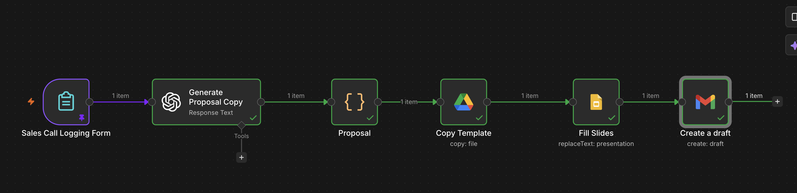

Automazioni.
Sopravvivono solo quelle che nessuno deve ricordarsi di usare.
Le automazioni migliori:
- si attaccano a un gesto che il team fa già
- scrivono i propri errori dove il team sta già guardando
- si possono lasciare accese senza sorvegliarle
Conferma appuntamento • Trello → SMS
Prevenire i no-show • Rende automatiche azioni manuali ripetitive

- Il problema di business
- Un cliente che fa no-show costa soldi al business.
- Esempi
-
- Agenzia immobiliare invia SMS al cliente 2 ore prima dell'appuntamento per vedere un nuovo appartamento
- Dentista invia SMS al cliente il giorno prima dell'appuntamento
- Palestra invia SMS al cliente 4 ore prima della prima lezione di Pilates
- Descrizione del flusso Trello → SMS
-
- Qualcuno del team sposta la card dell'appuntamento nella lista Confermato, come fa già ogni giorno.
- Trello avvisa n8n nell'istante in cui la card si muove.
- n8n verifica che si tratti davvero di uno spostamento in Confermato, e non di un altro cambiamento sulla board.
- Apre la card e ne legge il contenuto: la descrizione e le etichette.
- Dalla descrizione ricava il numero di telefono e lo riscrive in forma standard, con il prefisso internazionale.
- Controlla se la card porta già l'etichetta che dice che l'SMS è partito.
- Se il numero è valido e l'SMS non è mai partito, manda il messaggio, con data e ora prese dal titolo della card.
- Se il messaggio parte, mette sulla card l'etichetta che lo registra.
- Se non parte — numero mancante, numero irriconoscibile, SMS già inviato, invio rifiutato — scrive un commento sulla card con il motivo.
- Un'automazione solida
-
Niente fallisce in silenzio, e niente fallisce dentro un file di log che nessuno apre.
- Card senza numero di telefono
- Numero di telefono malformato
- Card confermata (spostata) due volte
- Messaggio rifiutato da Twilio
Ognuno di questi casi scrive un commento sulla card, con il motivo. Chi ha spostato la card è la persona che deve saperlo, e la card è dove sta già guardando.
- Cosa non fa ancora
-
Sono decisioni, non dimenticanze.
- Nessun tentativo ripetuto: un errore viene registrato, non riprovato, e se un promemoria in ritardo di un'ora vada mandato o no è una scelta di business.
- Nessuna conferma di consegna: che Twilio accetti un messaggio non vuol dire che il telefono lo riceva.
- Nessun orario di silenzio: una card confermata alle due di notte manda SMS alle due di notte.
- Automazioni concettualmente identiche, nella forma diverse
-
L'architettura è: un evento su un sistema che tiene i dati fa partire un messaggio, e l'esito torna scritto sul sistema stesso.
Implementazioni molto simili a Trello → SMS:
- un nuovo evento su un Calendar → SMS / WhatsApp / email / Slack
- un cambio di stato su Airtable → SMS / WhatsApp / email / Slack
- un cambio di fase sul CRM → SMS / WhatsApp / email / Slack
- l'invio di un modulo → SMS / WhatsApp / email / Slack
- un pagamento Stripe → SMS / WhatsApp / email / Slack
Oppure cambia il momento: promemoria 24 ore prima invece che alla conferma.
- Subito dopo
-
Le due cose che i clienti chiedono subito dopo sono:
- la risposta bidirezionale: il cliente scrive SÌ e la card si sposta da sola
- l'escalation: nessuna risposta entro due ore, e un umano viene avvisato di telefonare.
Generatore di proposte • Modulo → Google Slides
Proposta pronta mentre la call è ancora calda • Toglie di mezzo la scrittura ripetitiva

- Il problema di business
-
Scrivere proposte è un lavoro ripetitivo che nessuno tratta come tale. Finita la call, qualcuno riapre l’ultima proposta mandata, la duplica, cambia il nome dell’azienda, riscrive il problema, rifà lo scope, aggiorna le date, corregge il prezzo — e dimentica un riferimento al cliente precedente in fondo alla pagina sette.
Costa due volte: le ore di chi la scrive, e i giorni di ritardo con cui arriva. Una proposta che arriva il giovedì per una call del lunedì si legge quando l’entusiasmo è finito.
- Esempi
-
- Agenzia di automazione manda la proposta dieci minuti dopo la call di scoperta, con problema e scope detti dal cliente mezz’ora prima
- Studio di consulenza genera la lettera d’incarico dal modulo compilato dal partner che ha fatto il primo incontro
- Impresa edile trasforma i rilievi del sopralluogo in un preventivo impaginato, invece che in un PDF fatto a mano la sera
- Descrizione del flusso Modulo → Proposta
-
- Chi ha fatto la call compila un modulo, subito dopo, finché ha ancora le parole del cliente in testa: azienda, email, problema, soluzione, scope, costo, tempi.
- L’invio del modulo fa partire il flusso: nessun altro gesto, nessun pulsante da premere dopo.
- Un modello di linguaggio riceve quei campi e restituisce un unico oggetto JSON con tutti i testi della proposta: titolo, sommario del problema, tre blocchi di soluzione, tre voci di scope, quattro tappe con data.
- n8n copia su Google Drive la presentazione-template, e chiama la copia col titolo della proposta.
- Sulla copia sostituisce i segnaposto —
{{proposalTitle}},{{oneParagraphProblemSummary}}e gli altri — con i testi generati: ventiquattro sostituzioni in una chiamata sola. - Gmail prepara la bozza dell’email, già indirizzata a chi è scritto nel modulo e col link alla presentazione dentro.
Dal tasto “invia” del modulo alla bozza pronta da rileggere passa meno di un minuto. Il solo gesto umano rimasto è premere invio su un’email già scritta.
- Un’automazione solida
-
Il testo è generato, l’impaginazione no.
- Le slide non vengono create dal modello: viene copiato un template impaginato a mano una volta. Il modello riempie caselle di testo che esistono già, quindi il documento non può venire brutto — al massimo può venire scritto male.
- Il modello risponde in JSON, con l’opzione JSON Output attiva: ogni testo ha un nome, e il nodo che riempie le slide pesca per nome. Se il modello rispondesse in prosa la mappatura si romperebbe a ogni esecuzione.
- Il prompt contiene una proposta d’esempio completa, domanda e risposta: il modello non deve indovinare la lunghezza e il tono di ogni campo, li vede.
- Il costo non lo decide il modello: arriva dal modulo e viene scritto nella slide così com’è.
Dove si rompe davvero, e va sorvegliato: un campo che il modello lascia vuoto esce come segnaposto ancora visibile nella slide; un segnaposto scritto nel template in due battute separate non viene sostituito; le quote delle API di Google e OpenAI si esauriscono in silenzio.
- Cosa non fa ancora
-
Sono decisioni, non dimenticanze.
- Nessun controllo automatico prima della consegna: la revisione c’è, ma è umana. Il flusso si ferma alla bozza di proposito — nessuna regola verifica che quello che il modello ha scritto sia vero.
- Nessuna firma elettronica e nessuna tabella prezzi calcolata: una presentazione è un documento, non un contratto. Chi ha bisogno di far firmare usa la variante PandaDoc qui sotto.
- Nessun controllo su quello che il modello scrive: una data o una cifra inventate escono impaginate bene come tutto il resto.
- Nessun archivio: la proposta vive su Drive, ma non finisce né sul CRM né in un foglio che dica quante ne sono partite.
- Automazioni concettualmente identiche, nella forma diverse
-
L’architettura è: un modulo raccoglie dati grezzi, un modello li trasforma in campi con un nome, un documento-template viene copiato e riempito, e il link torna a chi deve leggerlo.
La variante a pagamento: PandaDoc. Stessa spina dorsale — modulo, stesso modello, stesso JSON. Al posto della coppia Drive + Slides c’è una sola richiesta HTTP che crea il documento da un template PandaDoc, riempie i token, costruisce la tabella prezzi con il costo preso dal modulo e lo manda in firma al cliente. Si sceglie quando servono firma elettronica, prezzi opzionali e approvazioni; si paga in abbonamento e in una richiesta HTTP da scrivere a mano invece che in un nodo con i campi già pronti.
Altre implementazioni della stessa architettura:
- modulo di sopralluogo → preventivo impaginato
- modulo di fine progetto → report di consegna per il cliente
- contratto firmato → pacchetto di onboarding personalizzato
- dati del mese → report mensile ricorrente, senza modulo: il trigger è il calendario
Oppure cambia il documento: Google Docs al posto di Slides, quando la proposta è una lettera e non un mazzo di slide.
- Subito dopo
-
Le due cose che i clienti chiedono subito dopo sono:
- la bozza in revisione: la proposta arriva prima a te, e parte al cliente solo quando l’hai approvata da Slack o dalle bozze di Gmail
- il seguito: sapere se la presentazione è stata aperta, e mandare un promemoria se dopo due giorni non l’ha aperta nessuno.